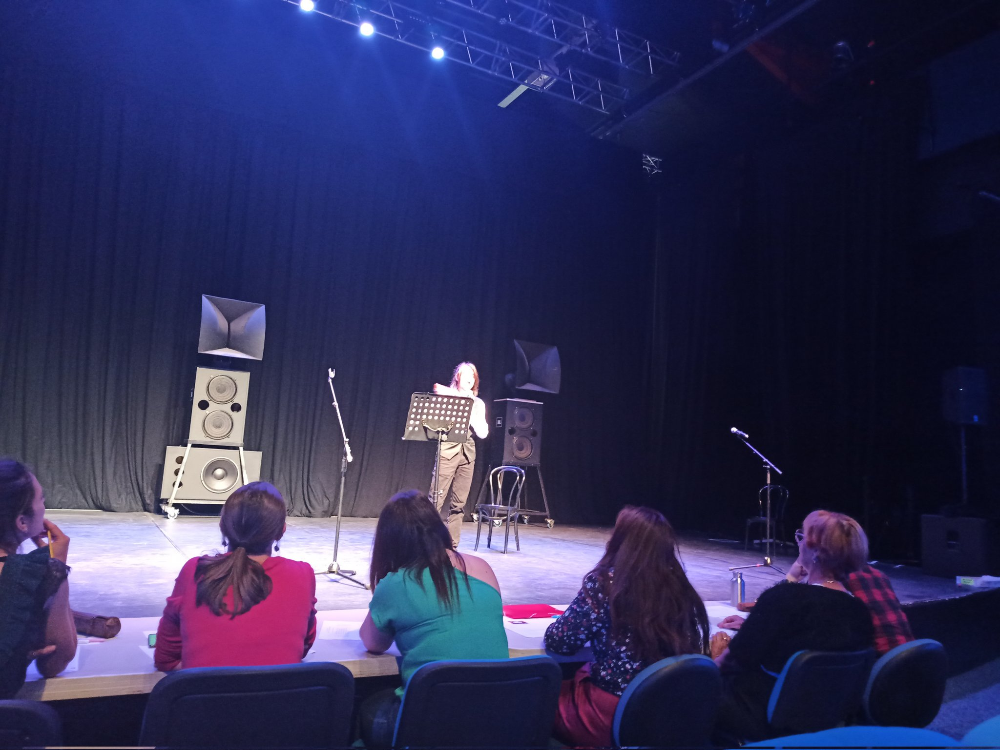

Au cours de mon année de terminale, j'ai participé à l'organisation d'un concours d'éloquence entre mon lycée et celui de Vizille. L'objectif était de récompenser le gagnant et d'organiser un évènement afin de rapprocher nos deux lycées et de fêter la fin d'année. Nous avons réussi à remplir une salle complète de plus de 300 places.
De mon côté, j'étais principalement chargé de la partie liaison entre les deux lycées, mais contribuais aussi en grande partie à l'organisation générale (choix des sujets, organisation des différentes étapes etc).
Cela m'a notamment permis d'obtenir de meilleures compétences en terme d'organisation et de gestion de projet, ainsi qu'en communication.
